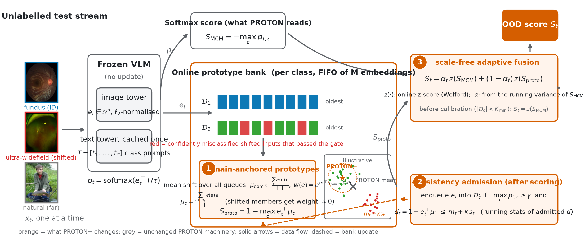
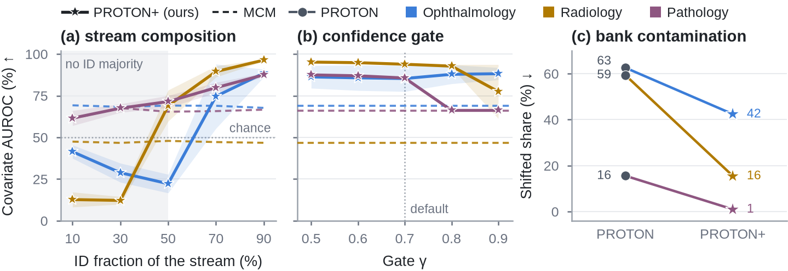

A follow-up to PROTON
1MBZUAI · 2University of Peradeniya · 3Khalifa University · 4ADIA Lab · 5MedOS
Medical vision-language models classify images from text prompts alone, and the softmax they produce cannot tell that an image comes from a new camera or a new population. PROTON+ keeps an online bank of class prototypes built from the test stream itself, anchors every prototype to the dominant imaging domain of the bank, and admits only samples that are consistent with their class, so confidently misclassified shifted inputs no longer corrupt the prototypes. With PROTON's hyper-parameters unchanged, it improves over MCM on the covariate and far shifts of retinal photographs, chest radiographs and histopathology, on every stream order, with no labels and no training.

A mean-shift step over the whole bank finds the dominant imaging-domain mode; each class prototype is the mean of its queue weighted by proximity to that mode, so a shifted cluster gets almost no weight.
A sample joins the bank only if it is confident and within the typical prototype distance of previously admitted samples.
Softmax score and prototype distance are fused as online z-scores with PROTON's variance-driven weight, so neither signal dominates by scale.
AUROC (%) per shift type, mean over five random stream orders. Each stream is the in-distribution test set plus one OOD split. Full tables with AUPR, FPR@95, ablations and sensitivity sweeps are on the results page.

Try it in your browser. The real FLAIR retina model runs locally; stream fundus photographs and watch PROTON+ flag what the softmax accepts.
▶ Open the live demopip install -e ".[models,data,plots]"
proton make-benchmark --name mydata --vlm flair --id normal=/d/id/normal --id "diabetic retinopathy=/d/id/dr" \
--ood semantic=/d/glaucoma --ood covariate=/d/uwf --ood far=/d/natural --prompt "A fundus photograph of {}"
proton extract --benchmark mydata && proton run --benchmark mydata # every table in outputs/results/mydata/
Any open_clip checkpoint works as the VLM; a new model is a four-method subclass of proton.models.base.VLM. PROTON+ is score_stream(..., config=proton_plus_config()); the original PROTON remains the default configuration.
@article{das2026proton,
title = {PROTON: Prototype-Based Test-Time Online OOD Detection for Medical VLMs},
author = {Das, Abhijit and Wasalathilaka, Nichula and Lu, Yifan and Dukre, Adinath and Mahapatra, Dwarikanath and Khan, Shadab and Razzak, Imran},
journal = {arXiv preprint arXiv:2606.20913},
year = {2026}
}
@misc{das2026protonplus,
title = {PROTON+: Contamination-Robust Prototype Banks for Test-Time Online OOD Detection with Medical VLMs},
author = {Das, Abhijit and Wasalathilaka, Nichula and Lu, Yifan and Dukre, Adinath and Mahapatra, Dwarikanath and Khan, Shadab and Razzak, Imran},
year = {2026},
note = {Preprint, https://github.com/aj-das-research/PROTON}
}